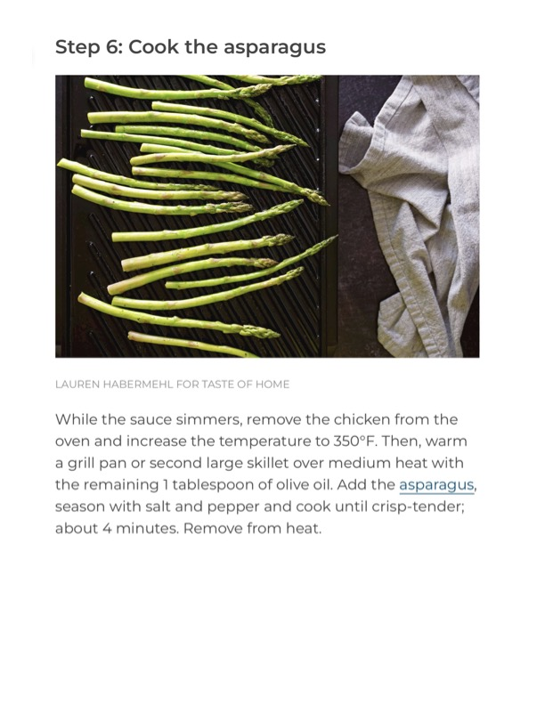

Enchilada Skillet - Ree Drummond

Original cookbook page 310
Easy one-skillet enchilada recipe with rotisserie chicken, black beans, and corn tortillas topped with cheese. From The Pioneer Woman on Food Network.
Prep: 15 minutes • Cook: 35 minutes • Total: 50 minutes
Ingredients
- 2 tablespoons salted butter
- 1 red onion, chopped
- 2 Roma tomatoes, diced
- 4 cloves garlic, minced
- 1 tablespoon chili powder
- 2 teaspoons ground cumin
- 1 teaspoon kosher salt
- One 15-ounce can black beans, drained
- One 15-ounce can red enchilada sauce
- 3 cups shredded rotisserie chicken
- 10 corn tortillas, cut into fourths
- 2 cups grated Cheddar-jack cheese
- TO SERVE:
- 1/2 cup sour cream
- 1/2 cup chopped fresh cilantro
- 1/2 cup sliced black olives
- 1 avocado, diced
- 2 limes, cut into wedges
Instructions
- Preheat oven to 450°F.
- Melt butter in a cast-iron skillet over medium-high heat. Add onion, tomatoes, and garlic. Season with chili powder, cumin, and salt; cook 2–3 minutes.
- Add beans, enchilada sauce, and chicken; stir to combine. Gently fold in quartered tortillas and top with cheese.
- Bake until cheese has melted, 15–18 minutes.
- Remove from oven and garnish with sour cream, cilantro, olives, and avocado. Serve with lime wedges on the side.
📝 Recipe Notes
Recipe by Ree Drummond from The Pioneer Woman, Food Network episode 'Keeping It Saucy'. Level: Easy. Uses cast-iron skillet for best results. Great for using up rotisserie chicken.
Recipe #310 from collection